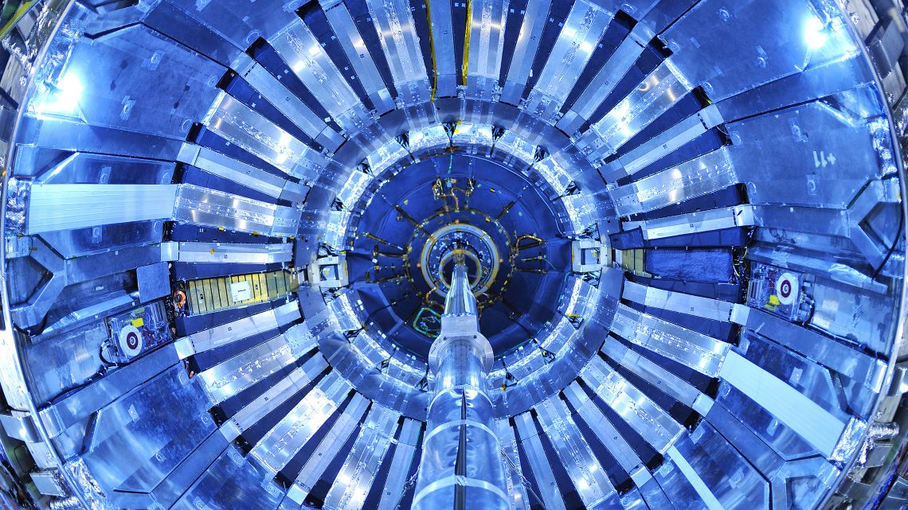
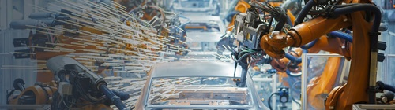

Qual a melhor opção?
Engenharia Física |
Engenharia Mecânica |
|
| Curso |  |
 |
| Média | 177,8 valores | 175,0 valores |
| Comparação |
|
|
| Saídas Profissionais | Investigação, indústria tecnológica, energia, instrumentação. | Indústria automóvel, aeronáutica, energia, produção, manutenção. |
| Site do IST | Eng Fís | Eng Mec |
Vem conhecer: O GRANDE Voli FC